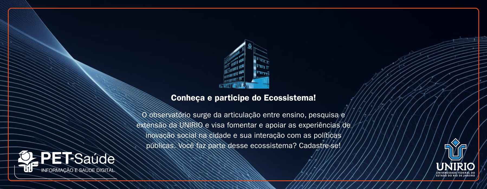

Telemedicina Comunitaria
Atendimento remoto para comunidades com apoio de agentes de saude.
Conecta UBS, equipes locais e especialistas para triagem e acompanhamento de pacientes cronicos.

Exemplos interativos de projetos e iniciativas em saude digital.

Atendimento remoto para comunidades com apoio de agentes de saude.
Conecta UBS, equipes locais e especialistas para triagem e acompanhamento de pacientes cronicos.
Rede de mentores para acelerar iniciativas de impacto em saude.
Oferece trilhas de mentoria para gestao, captacao e validacao de solucoes em territorios vulneraveis.

Visualizacao de indicadores para apoio a decisao em politicas publicas.
Centraliza dados de acompanhamento territorial para orientar acoes de prevencao e resposta rapida.